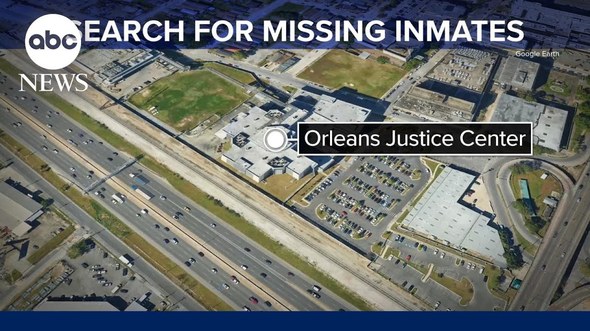

【新奥尔良监狱近十几名囚犯越狱后进入封锁状态】
Summary: A New Orleans jail is on lockdown after 11 inmates escaped, with one caught and 10 still at large. Authorities warn the public to avoid the escaped inmates, who are considered armed and dangerous.
摘要： 新奥尔良监狱11名囚犯越狱，1人被捕，10人在逃，监狱进入封锁状态。当局警告公众远离这些逃犯，他们被认为携带武器且危险。

⏱️ Estimated Reading Time: 4 min
Another story that's breaking this hour.
这是本小时的最新消息。
One person caught and 10 still on the loose after escaping from a New Orleans jail.
一人被捕，10人仍在逃，他们从新奥尔良监狱逃脱。
That jail now on lockdown amid a massive manhunt across the area.
该监狱现已封锁，同时展开大规模搜捕行动。
The Orleans Parish Sheriff's Office says that 11 inmates had escaped from the Orleans Justice Center.
奥尔良教区警长办公室称，11名囚犯从奥尔良司法中心逃脱。
It happened this morning when a headcount revealed that the inmates were missing.
事件发生在今早，点名时发现囚犯失踪。
The jail is located about 2 miles from Bourbon Street.
监狱距离波旁街约2英里。
Officials now urging the community to use extreme caution, warning that these 10 inmates who are still on the loose should be considered armed and dangerous and you do not want to get anywhere close to them.
官员敦促社区高度警惕，警告在逃的10名囚犯应被视为携带武器且危险，切勿靠近。
Let's bring in our Maria Viel.
现在请我们的玛丽亚·维尔报道。
She's tracking it.
她正在追踪此事。
What are police saying at this hour?
警方目前有何说法？
You know, Kira, there's a lot of information that is still um unknown coming from law enforcement.
基拉，目前执法部门仍有许多未知信息。
Obviously, we know that this happened this morning as you mentioned.
显然，如你所言，事件发生在今早。
Um, right now all local law enforcement have been notified to be on the lookout, but there was a press conference that just happened not too long ago and it was ended very quickly without a whole lot of information being given uh to local media um and local, you know, people that were there from the public about exactly how this could have happened.
目前所有当地执法部门已接到警戒通知，但不久前举行的新闻发布会很快结束，未向当地媒体和公众透露太多细节。
um and why it was um that that they didn't alert the public for several hours after really recognizing that this had happened, that this escape had happened, and that so many people had been um uh that had gotten out.
为何在确认越狱事件发生后数小时才向公众发出警报。
What we do know also that is that one of the inmates has been caught, but there still are several other out on the loose right now.
目前已知一名囚犯被捕，但仍有数人在逃。
And their charges is what people really want to know about.
公众迫切想知道他们的指控罪名。
What exactly were they in jail for?
他们因何入狱？
What should people be aware of?
公众应注意什么？
So, what do we know about the search area?
目前搜捕范围有何信息？
Is there a certain uh region or part of New Orleans or outside of New Orleans where police are focusing on now?
警方是否集中搜查新奥尔良特定区域或周边？
I think that that is definitely the case.
我认为确实如此。
As of right now, they have alerted, you know, the entire state just as a major precaution, right?
目前作为重大预防措施，他们已向全州发出警报。
That's normal in these types of situations because you never know where these inmates might have family, where they might go in order to try and be protected, to try and hide themselves obviously.
这类情况下这很正常，因无法预知囚犯可能投靠的亲友或藏身之处。
But what is very concerning to the public, I've spoken with a number of restaurant association people um in the region in New Orleans near Bourbon Street especially.
但令公众尤为担忧的是，我采访了波旁街附近多家餐饮协会人士。
I asked them, have they been alerted?
我问他们是否收到警报。
They said yes, they do know about this, but only by local media reports.
他们表示通过当地媒体报道知晓此事。
Um, obviously they are getting a better idea of who these people are.
显然他们正更清楚逃犯身份。
Um, clearly this jail is not that far from Bourbon Street and where we see a lot of tourism in the New Orleans area.
该监狱距离波旁街及新奥尔良旅游区不远。
So, as of right now, a lot of these local organizations are sharing this information amongst themselves to be on high alert, especially after what we saw in January.
目前当地组织正共享信息保持高度警戒，尤其考虑到一月份的事件。
They don't want to take any risk right now.
他们现在不愿冒任何风险。
They're being extra cautious with their own security to make sure they are prepared in case local law enforcement is out in other parts of the city and county and the parishes, for example, trying to find these guys.
他们格外加强安保，确保做好准备，以防执法人员前往其他区域搜捕。
All right, we'll stay on it.
好的，我们将持续关注。
Maria, thank you so much.
非常感谢，玛丽亚。